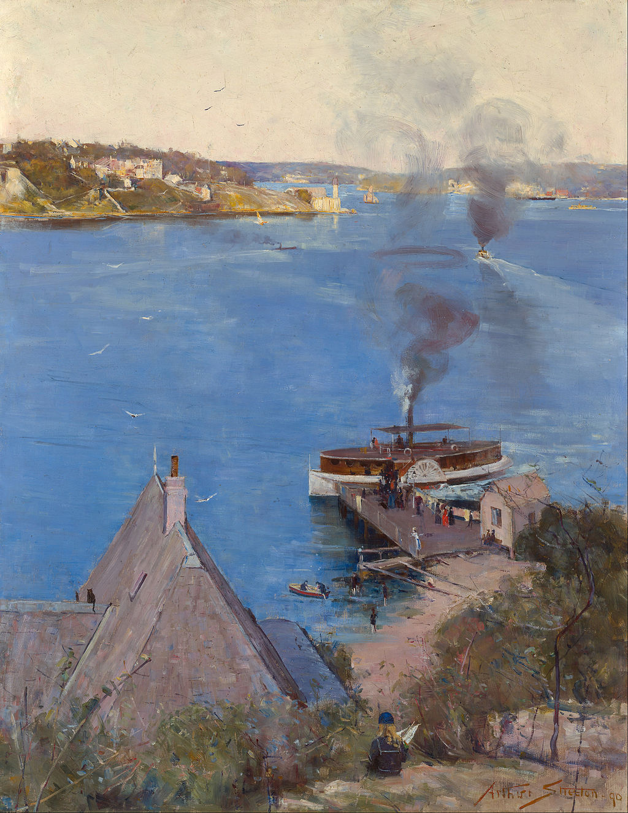

<head>
<meta charset="UTF-8" />
<meta name="keywords" content="drawing, painting" />
<meta name="description" content="drawings by Sunjy" />
<title>Sunjy</title>
<link rel="shortcut icon" type="image/x-icon" href="../../mImages/mCommon/favicon.ico" media="screen" />
<link rel="stylesheet" type="text/css" href="../../mCsses/mCommon/mCssA.css" />
<link rel="stylesheet" type="text/css" href="../../mCsses/mCommon/mCssB.css" />
<link rel="stylesheet" type="text/css" href="../../mCsses/mCommon/mCssC.css" />
<link rel="stylesheet" type="text/css" href="../../mCsses/mCommon/mCssD.css" />
<link rel="stylesheet" type="text/css" href="../../mCsses/mContent/mCssA.css" />
<link rel="stylesheet" type="text/css" href="../../mCsses/mContent/mCssB.css" />
<link rel="stylesheet" type="text/css" href="../../mCsses/mContent/mCssC.css" />
<link rel="stylesheet" type="text/css" href="../../mCsses/mContent/mCssD.css" />
</head>
<script type="text/javascript" src="../../mScripts/mContent/mContentAA.js" /></script>
<script type="text/javascript" src="../../mScripts/mContent/mContentAB.js" /></script>
<script type="text/javascript" src="../../mScripts/mContent/mContentAC.js" /></script>
<script type="text/javascript" src="../../mScripts/mContent/mContentAD.js" /></script>
<script type="text/javascript"></script> 
<script type="text/javascript">
document.write('<div class="mImgAbsolute"></div>');
/*
document.write('<p class="mFontSizeBColor" />From a white paper...</p>');
document.write('<table class="center"><tr><td>');
document.write('');
document.write('</td></tr></table>');
*/
</script>


<script type="text/javascript">
document.write('<p class="mFontSizeBColor" />From McMahon’s Point – Fare One Penny </p>');
document.write('<p class="mFontSizeSColor" />“From McMahon’s Point – fare one penny” by Arthur Streeton was painting his 1890 visit to Sydney. While staying with his sister in Summer Hill, Streeton painted views from Coogee and the Harbour. Streeton wrote to Tom Roberts about this painting at McMahon’s Point:<br><br>“have a most delightful subject there looking towards Milson’s Pt<br> with an expanse of water, tops of houses,<br> and landing stage & station, in the foreground of the picture.” <br></p>');
document.write('<table class="center" /><tr><td>');
document.write('<br>“have a most delightful subject there looking towards Milson’s Pt<br> with an expanse of water, tops of houses,<br> and landing stage & station, in the foreground of the picture.” <br>" />');
document.write('</td></tr></table>');
</script>


